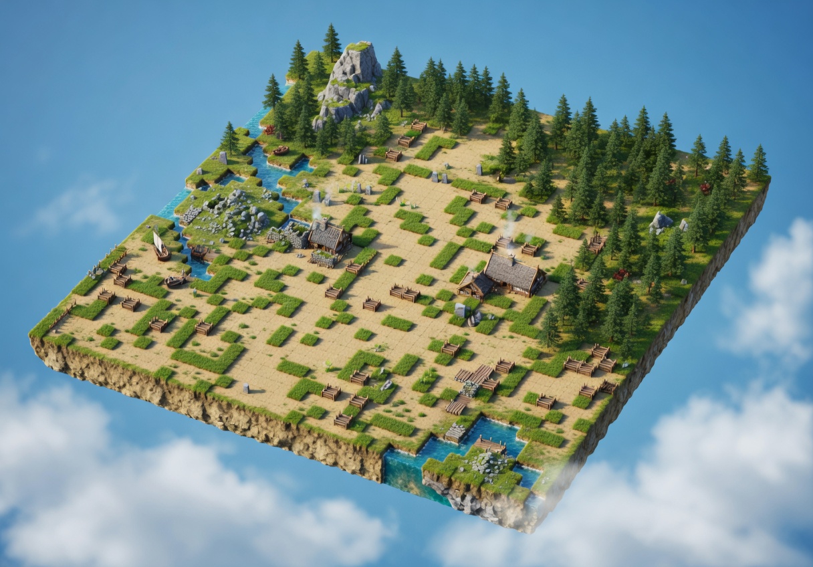
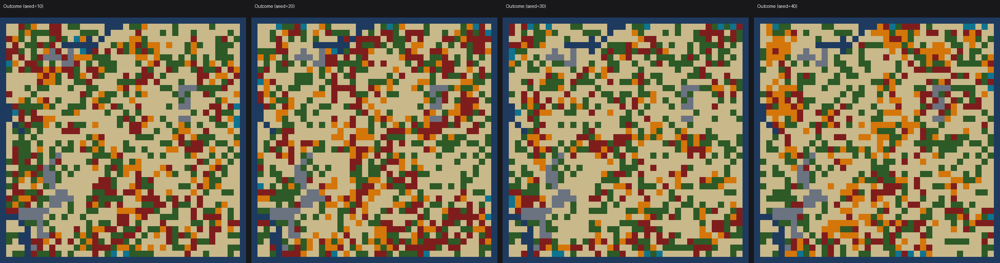
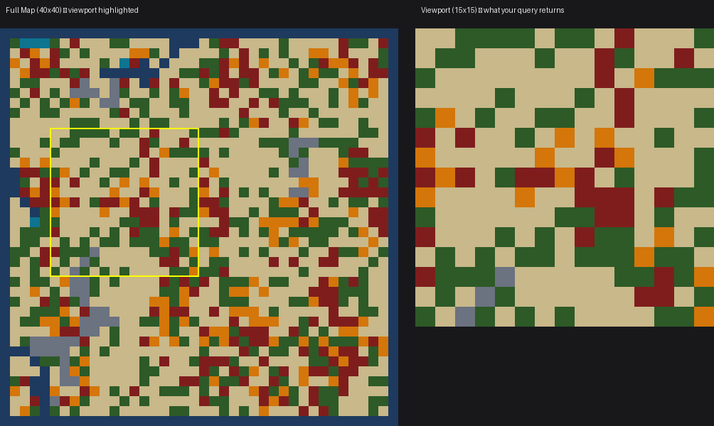

Astar Island — Viking Civilisation Prediction
What is this?
Astar Island is a machine learning challenge where you observe a black-box Norse civilisation simulator through a limited viewport and predict the final world state. The simulator runs a procedurally generated Norse world for 50 years — settlements grow, factions clash, trade routes form, alliances shift, forests reclaim ruins, and harsh winters reshape entire civilisations.
Your goal: observe, learn the world's hidden rules, and predict the probability distribution of terrain types across the entire map.
- Task type: Observation + probabilistic prediction
- Platform: app.ainm.no
- API: REST endpoints at
api.ainm.no/astar-island/

How It Works
- A round starts — the admin creates a round with a fixed map, many hidden parameters, and 5 random seeds
- Observe through a viewport — call
POST /astar-island/simulatewith viewport coordinates to observe one stochastic run through a window (max 15×15 cells). You have 50 queries total per round, shared across all 5 seeds. - Learn the hidden rules — analyze viewport observations to understand the forces that govern the world
- Generate predictions — use your understanding to build probability distributions for the full map
- Submit predictions — for each of the 5 seeds, submit a W×H×6 probability tensor predicting terrain type probabilities per cell
- Scoring — your prediction is compared against the ground truth using entropy-weighted KL divergence
The Core Challenge
The simulation is stochastic — the same map and parameters produce different outcomes every run. With only 50 queries shared across 5 seeds, and each query only revealing a 15×15 viewport of the 40×40 map, you must be strategic about what you observe and how you use that information.


The world is governed by many hidden forces that interact in complex ways. Teams that understand these interactions can build accurate models and generate predictions far beyond what raw observation provides.
Quick Start
- Sign in at app.ainm.no with Google
- Create or join a team
- Go to the Astar Island page
- When a round is active, use the API to observe the simulator
- Analyze results, build your model, submit predictions for all 5 seeds
Key Concepts
| Concept | Description |
|---|---|
| Map seed | Determines terrain layout (fixed per seed, visible to you) |
| Sim seed | Random seed for each simulation run (different every query) |
| Hidden parameters | Values controlling the world's behavior (same for all seeds in a round) |
| 50 queries | Your budget per round, shared across all 5 seeds |
| Viewport | Each query reveals a max 15×15 window of the map |
| W×H×6 tensor | Your prediction — probability of each of 6 terrain classes per cell |
| 50 years | Each simulation runs for 50 time steps |